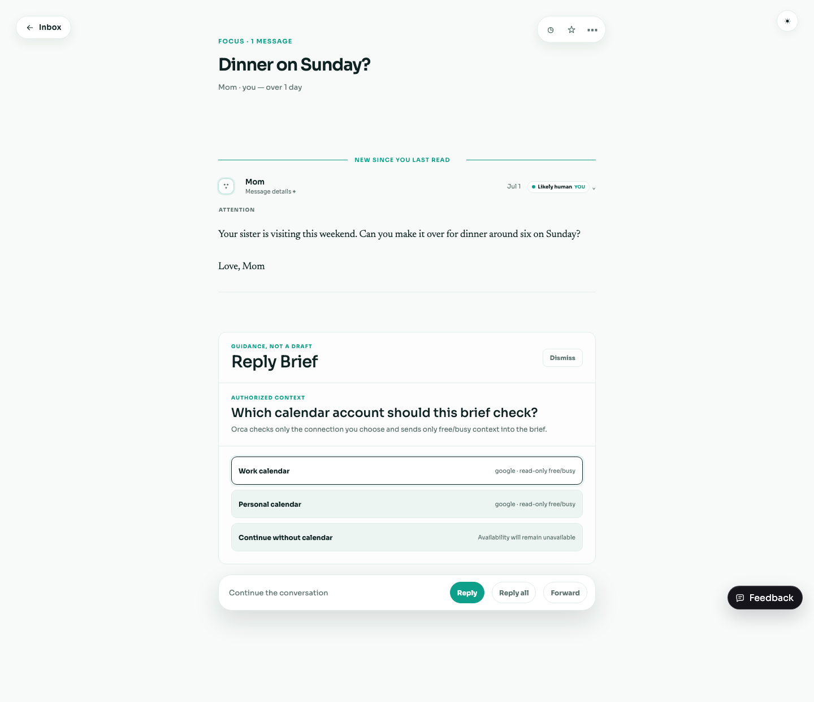
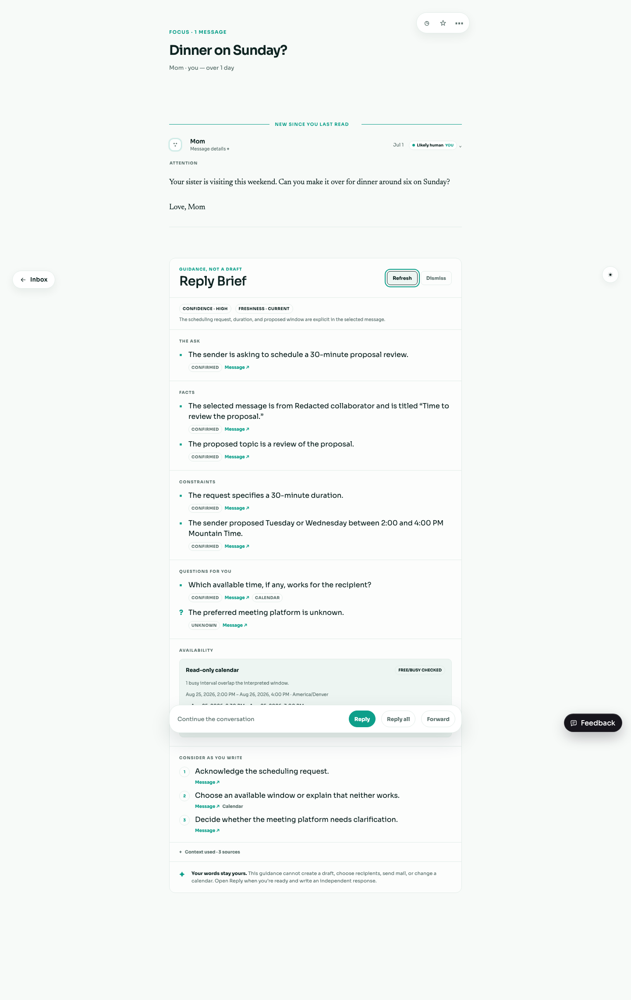
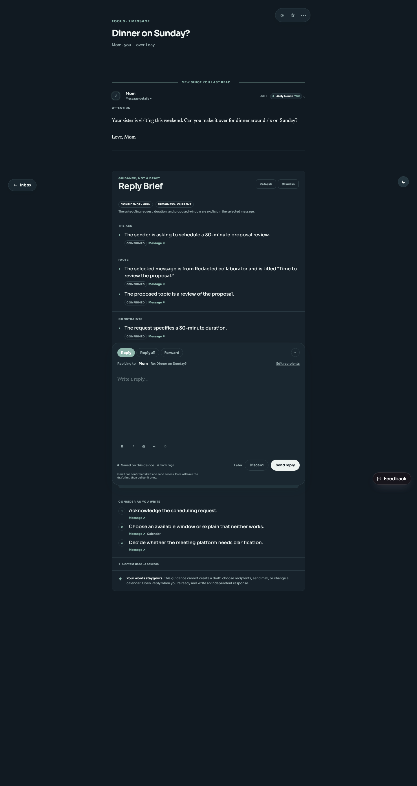

The brief is idle until “Get reply guidance” is pressed. It can be refreshed or dismissed; in-flight work is abortable.
BRE-279 · Manual validation
Reply guidance that never becomes the reply.
An on-demand, source-linked brief explains the ask, facts, constraints, questions, considerations, confidence, freshness, and authorized free/busy context. The human composer remains separate and blank.
Acceptance map
Loading, ready, partial, unavailable, empty, stale, and retryable request errors are visibly distinct.
Claims link to the selected message; free/busy is labeled as authorized read-only context with timestamps.
When multiple connections exist, the human chooses the exact account carried by the invocation. Ambiguous, stale, expired, revoked, or missing access stays unknown.
No draft text, reply body, compose action, recipients, send action, or calendar write is present in the contract or UI.
Default, hover, focus, pressed, loading, and disabled controls preserve readable labels in light and dark themes.
Human-owned writing check
- Open
/dev/inbox?thread=thread_3&accountId=acct_demo. - Confirm no Reply Brief exists before pressing Get reply guidance.
- Press Get reply guidance. With multiple Calendar connections, choose one account and verify no brief is generated before that choice.
- Generate the brief, inspect its cited claims and free/busy disclosure, then press Reply.
- Confirm the composer opens blank: no generated prose, recipients changed by the brief, or hidden calendar action.
- Write an independent response in your own words. Dismiss or refresh the brief and confirm existing compose text is untouched.
Automated verification
bun test packages/shared/src/reply-brief.test.ts packages/shared/src/reply-brief-calendar.test.ts apps/api/src/reply-brief.test.ts apps/api/src/reply-brief-route.test.ts apps/web/src/reply-brief.test.tsx apps/web/src/App.test.tsx
bun run typecheck
bun run build
bun run lintThe focused suite covers prompt injection, strict scoped invocation, mixed and unavailable availability, missing or ambiguous facts, stale context, runtime failure, composer non-mutation, and theme-safe control tokens. Final command results are recorded with the ticket handoff.
Headless browser evidence


